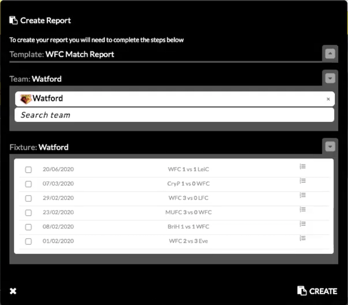

More information about player profiles can be found here.
Watford want to keep the same report format that they currently use with Scout7, so we will try to replicate it as closely as possible.
Here the user can see all reports (listed chronologically descending by default but this will be editable).
The user can create a report from this screen, from the dashboard, or within a player's profile.
User is given the option to create a report from either a Match or Player template:
Individual reports will have the basic match information as seen in the Match Report, including the starting line ups diagram.
As much information (height/weight etc) will be pre-filled as possible.
- Each report will be broken down into four primary areas:
Each has specific characteristics within those categories to be scored and commented on, along with a final "Gut Instinct" score.
As mentioned, each report will have a total of 12 categories to score, with each attribute being scored out of four:
Position-specific reports will be possible in future but Watford do not want this functionality.